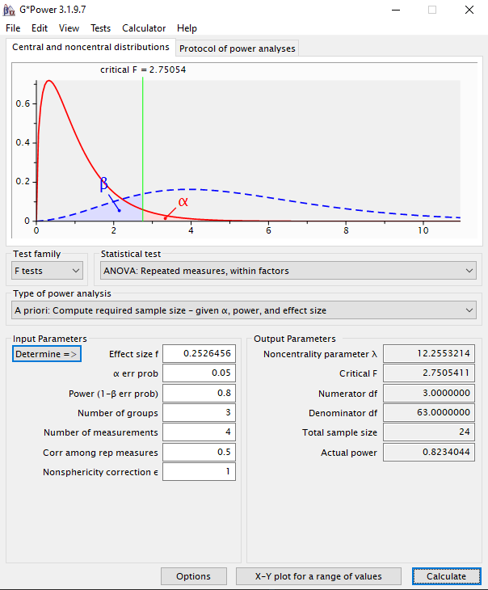
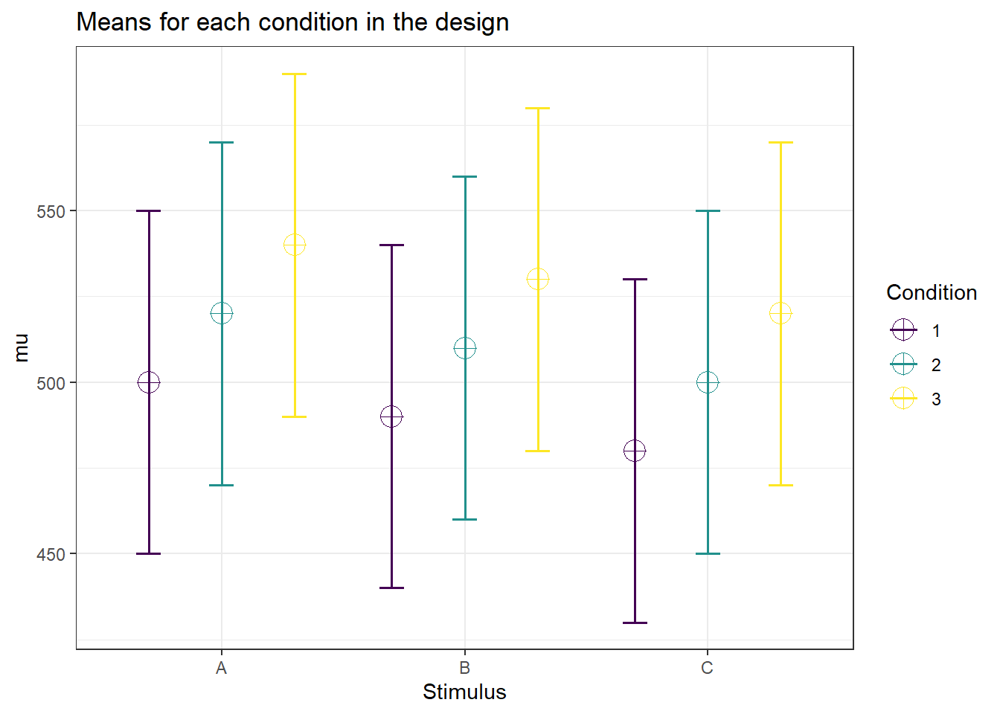

Power analysis is a statistical technique that helps scientists determine the sample size required to detect an effect of a given size with a desired degree of certainty. It helps researchers understand the likelihood that their study will detect a meaningful difference or relationship (if one exists) between groups or variables being studied. By performing a power analysis before conducting an experiment, scientists can ensure that the study is neither too small (which would result in a lack of statistical power to detect an effect, leading to a possible Type II error) nor too large (which could waste resources and potentially expose participants to unnecessary procedures). It’s a crucial step in the research design process that helps in making informed decisions and in enhancing the credibility and replicability of scientific findings.
You need to calculate a priori sample size according to the statistical test you want to make an argument. For example, if you are interested in only the results of ANOVA comparisons then, you should make your calculation for your ANOVA test. However, if you desire to analyze further with multiple comparisons then, you should calculate required sample size based on your post-hoc method which is commonly paired t test.
G*Power
G*Power is a very popular and free software program that researchers use to conduct power analysis. It was developed by Franz Faul at the Universität Kiel, Germany, and is frequently updated and improved upon. The software is designed to help researchers with a variety of statistical tests, including t-tests, F-tests, chi-squared tests, z-tests, and some exact tests.
G*Power provides a flexible tool for calculating the required sample size for a study based on the effect size, significance level, and power – which refers to the probability of correctly rejecting a false null hypothesis. Researchers can also use G*Power to calculate the power of their study given the sample size and effect size.
The program is user-friendly, allowing both beginners and experienced users to carry out a range of power analyses that might otherwise be complex and time-consuming. Its broad applicability across various statistical analyses makes it a valuable tool in the research planning process, helping to ensure that studies are properly designed to yield valid and reliable results.
To calculate an a priori sample size using G*Power, you need to follow several steps. The specific steps might change slightly depending on the statistical test you plan to use, but the overall process is similar:
Download and Open G*Power
Choose the Test
In the G*Power interface, select the statistical test that you intend to use from the ‘Test family’ (e.g., t tests, F tests, etc.) and the ‘Statistical test’ (e.g., ANOVA, linear multiple regression, etc.) menus according to the hypothesis of your study.
Determine the Type of Power Analysis
Since you want to calculate the sample size, you should choose ‘A priori: Compute required sample size - given α, power, and effect size’.
Input Parameters
Effect Size: Estimate the effect size for your desired test, which indicates the magnitude of the relationship or difference that you expect to find. You can use previous literature or pilot studies to estimate this.
α Error Probability (Significance Level): Typically, this is set at 0.05.
Power (1-β Error Probability): Commonly set at 0.80, indicating an 80% chance of detecting an effect if there really is one.
Allocation Ratio (for comparative studies): This is the ratio of the number of participants in one group to the number of participants in the other group(s). For equal group sizes, this is set to 1.
Calculate
Once all parameters are entered, click on the ‘Calculate’ button. G*Power will display the required sample size for your study based on the input values.
Review Output
G*Power will provide the calculated sample size along with other details related to the power analysis. Carefully review this output to determine if it is suitable for the needs of your study.
Keep in mind that determining these parameters, especially the effect size, can sometimes be the most challenging part of a power analysis. Consult with a statistician, your team members or relevant literature if you are unsure about these inputs. Finally, remember that power analysis is an important part of designing your study, but it should be combined with practical considerations like resource availability, ethical constraints, and methodological limitations.
Repeated measures ANOVA on G*Power
As an example, let’s say we have 3 different stimulus types. In each session, we will present one type of stimuli at 4 different contrast levels. The task will be the same throughout the experiment. Our aim is to determine the effect of contrast.
In such a case, we need using a repeated measures ANOVA (or 2-way mixed ANOVA or split-plot ANOVA). Calculating an a priori sample size for a mixed-design ANOVA in GPower can be a bit tricky, as G*Power does not directly provide a pre-built module for mixed ANOVAs with both within- (repeated measures) and between-subjects factors. However, you can still approximate the necessary calculations by considering the most powerful test within your design, which is typically the repeated measures part if the effect sizes are similar. Here is a general guide on how to do this:
Open G*Power
Select the Statistical Test
Choose ‘F tests’ as the test family.
Choose ‘ANOVA: Repeated measures, within factors’.
(You can also choose ‘ANOVA: Repeated measures, between factors’ depending on which effect you expect to be larger or more important to your hypothesis testing. However, a conservative approach is often to consider the within-effects when uncertain.)
Choose the Type of Power Analysis
Select ‘A priori: Compute required sample size - given α, power, and effect size’.
Input the Parameters
Effect Size: We need to determine the effect size with direct method to count the effect of repeated measure. To do that, click on ‘Determine =)>’. On the pop-up window, select ‘Direct’. Enter eta squared value. Click ‘Calculate and transfer to main window’.
Eta squared (\(\eta^{2}\)) is the effect size that indicates the total variance in testing explained by the within-subject variable (in our case, different contrast levels). Approximate partial eta squared conventions are small = 0.02, medium = 0.06, large = 0.14.
α Error Probability: The significance level is typically set at 0.05.
Power: Set this commonly to 0.80, indicating an 80% probability of correctly rejecting the null hypothesis.
Number of Groups: For the between-subjects factor, input the number of levels or conditions. If you compare, for example, healthy vs patient group, the number of groups is 2. For within-subject designs, the number of groups should be 1.
Number of Measurements: For the within-subjects factor, input the number of levels or conditions. If you have more than one independent variable, you can compute the number of measurements by multiplying the number of conditions for each factor. For example, if you have three stimulus types (k = 3) each of that is presented at four contrast levels (m = 4), you have 12 measurements (k x m = 3 x 4).
Correlation among Repeated Measures: This is determined by the expected correlation between the measures at different levels of contrast. If you don’t have an estimate, using a default value like 0.5 can be a starting point.
Nonsphericity Correction ε: If you have an estimate for this, input it here; otherwise, you can keep it at 1 or use the default provided by G*Power.
Calculate
Review Results

Please note that this approach is an approximation, as it does not fully represent the complexity of a mixed-design ANOVA. It essentially treats the between-subjects factor as another within-subjects level, which may not be totally accurate but can give you a ballpark figure for your sample size. If possible, consult with a statistician to ensure that the calculation is correctly tailored to your study’s specific needs and to take into account other complexities that G*Power may not directly address for mixed designs.
If you want to use R to calculate your power level or required sample size, you can use one of the available packages depending on your needs.You can use the ready-to-use function with default parameters: Script is here.
pwr
This is the most common and basic package for power analysis. However, it is not suitable for complex statistical tests such as repeated measures ANOVA.
pwr:::pwr.t.test(n =NULL, # NULL to calculate a priori sample sized =0.4, # Cohen's d, effect sizesig.level =0.05, # alpha valuepower =0.80, # desired power leveltype ="paired", # type of t testalternative ="two.sided"# alternative hypothesis)
Paired t test power calculation
n = 51.00945
d = 0.4
sig.level = 0.05
power = 0.8
alternative = two.sided
NOTE: n is number of *pairs*
WebPower
This is a strong tool for different types of ANOVA.
WebPower::wp.rmanova(n =NULL, # Compute required sample sizeng =1, # Only one group if it's a within-subjects designnm =3*3, # Number of measurements (n*m for n x m design)f =0.4, # Effect sizenscor =1, # Nonsphericity correction (assumed sphericity for now)alpha =0.05, # significance level, aka alpha valuepower =0.80, # desired power type =1# 0: between-effect; 1: within-effect; 2: interaction effect)
Repeated-measures ANOVA analysis
n f ng nm nscor alpha power
94.86041 0.4 1 9 1 0.05 0.8
NOTE: Power analysis for within-effect test
URL: http://psychstat.org/rmanova
Superpower
As the name suggests, it is super for power analysis :) However, you need to simulate your data to calculate required sample size. It might be useful to calculate actual power level. However, it is hard to create simulations in general for our studies in Visual Neuroscience Lab.
# Experimental designdesign_result <- Superpower::ANOVA_design(design ="3w*3w", # 3x2 within-subjects n =30, # as a start point to find the required sample sizemu =c(500, 520, 540, 490, 510, 530, 480, 500, 520), # average values for dependent variablesd =50, # estimated standard deviationr =0.5, # correlation between repeated measureslabelnames =c("Stimulus", "A", "B", "C", "Condition", "1", "2", "3"))

# simulation for power analysisSuperpower::ANOVA_power(design_result, nsims =1000)